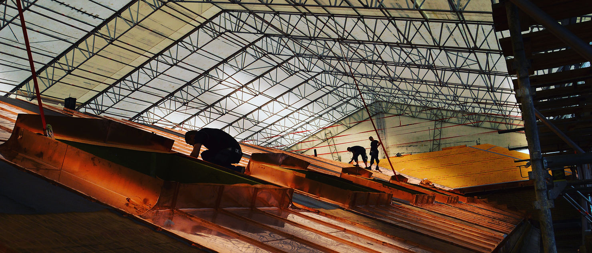
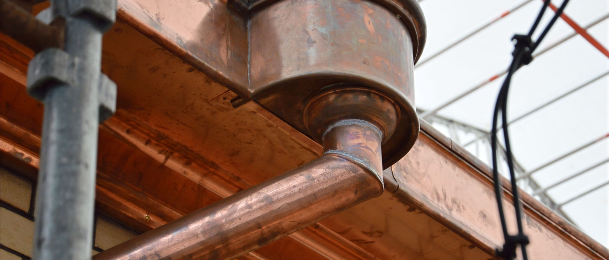
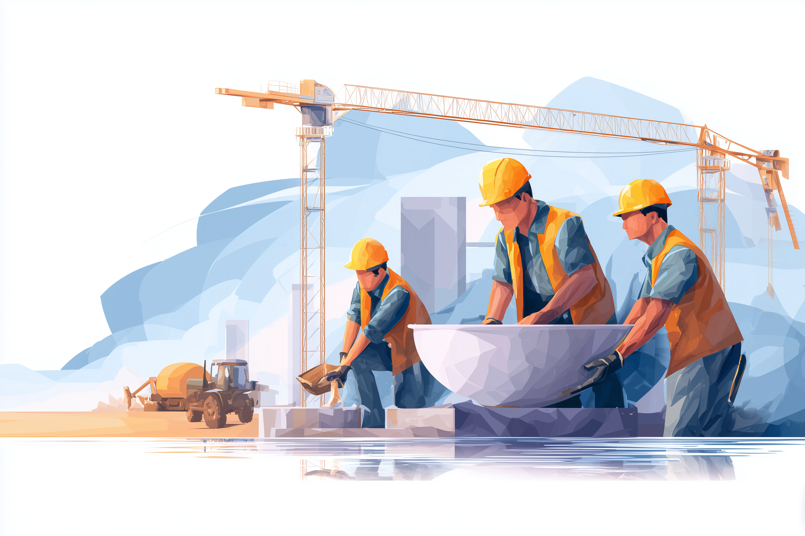

Antikvarisk rehabilitering
Bevaring av vernede bygg med riktige metoder og materialer — kalkpuss, blyglass, naturstein, kobber og tre.
Spesialister på antikvarisk rehabilitering, riggentrepriser og nybygg.
Vi er en mellomstor entreprenør med fokus på antikvarisk rehabilitering, riggentrepriser og nybygg. Med lang erfaring innen tak- og fasadearbeid, og rigg og drift av byggeplasser, jobber vi for store eiendomsbesittere, det offentlige og selvstendige eiendomsutviklere.
Vårt fokus er å bevare byggehistorien — og videreføre arven av norsk byggekunst gjennom spesialisert kompetanse på historiske byggemetoder og detaljert håndverk.
Fra antikvarisk fasaderehabilitering på vernede kirker til store, kompliserte riggentrepriser i drift — vi løser oppgaven med håndverkere som er stolte av faget.
Bevaring av vernede bygg med riktige metoder og materialer — kalkpuss, blyglass, naturstein, kobber og tre.
Komplisert rigg, drift og brakkerigg på sykehus, museer og store bygg som er i full operativ drift.
Skifertekking, kobberarbeid, mørtelfuger, takrenner og blikkenslagerarbeid på krevende, gamle bygg.
Som totalentreprenør leverer vi nybygg der detaljkvalitet og presisjon er like viktig som tempo.
Et utvalg fra to kjernevirksomheter — antikvariske bygg restaurert i samråd med Riksantikvaren, og riggentrepriser på sykehus, museer og store offentlige bygg.


På Historisk Museum la vi om ~2 000 m² tak med ny skifer, kobberdetaljer, takrenner, piper og takvinduer — mens 40+ kilometer mørtelfuger ble skrapt og fuget på nytt. Nesten 600 vindusrammer ble demontert og restaurert, og rundt 100 blyglassfag ble rehabilitert. Alt mens museet var i drift.
Når vi tar vare på det som allerede står, reduseres mengden avfall og behov for nytt materiell. Bærekraft betyr for oss å forene sosiale, økonomiske og miljømessige hensyn — fra Miljøfyrtårn-rapportering til konkrete mål om fossilfri bilpark innen 2030.
Vi har identifisert seks av FNs bærekraftsmål som mest relevante for vår virksomhet, og jobber aktivt mot sosial dumping i hele leverandørkjeden.
Vi rekrutterer faglærte tømrere, blikkenslagere, murere og lærlinger. Hos oss får du jobbe på noen av landets mest spennende antikvariske prosjekter — sammen med et lag som er stolte av faget og av hverandre.

Ser du etter en entreprenør for ditt prosjekt eller en ny spennende arbeidsplass? Send oss noen ord — vi svarer i løpet av én arbeidsdag.